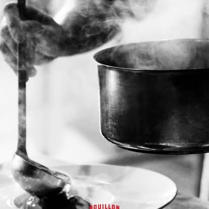

Le goût péi, le vrai
Tous nos pains burgers, les célèbres buns, sont faits maison par un artisan local. Moelleux, savoureux, préparés avec soin : la qualité se retrouve dans les moindres détails, jusqu'au pain.
Voir la carteDirection le cœur de Mafate, à 1 850 mètres d'altitude, pour découvrir le Plateau du Kerval, un petit coin exceptionnel de notre île, niché au pied du Gros Morne.
Une mare, une petite cascade, des paysages à couper le souffle… et surtout un nom chargé de notre territoire et de notre identité réunionnaise.
Chez Bouillon Kerval, notre nom n'a pas été choisi au hasard : il raconte La Réunion, ses paysages, ses racines et ce patrimoine que nous aimons tant.
Le Kerval, c'est là-haut. Bouillon Kerval, c'est un petit bout de tout ça dans votre assiette.

Tous nos pains burgers, les célèbres buns, sont faits maison par un artisan local. Moelleux, savoureux, préparés avec soin : la qualité se retrouve dans les moindres détails, jusqu'au pain.
Voir la carte